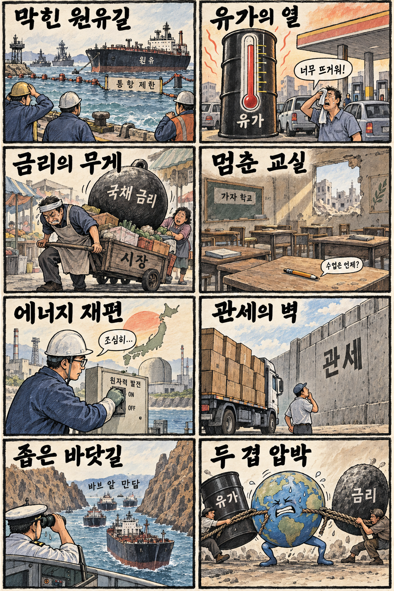
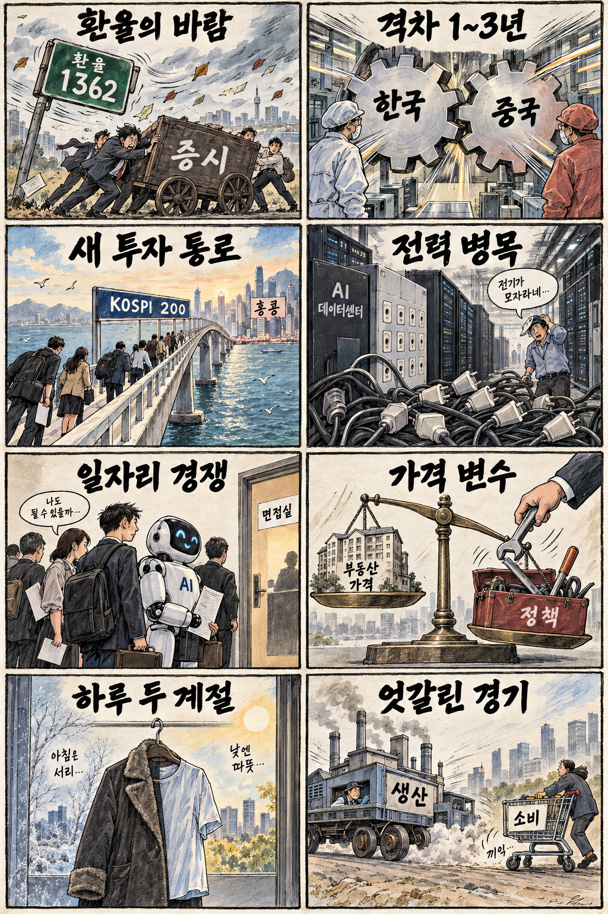

01
코인베이스 · 183.62→172.11달러 · -6.27%
내용요약 시가 대비 6%대 급락해 조사 종목 가운데 낙폭이 가장 컸습니다.
예상여파 가상자산 가격과 규제 변화에 민감해 방향 전환 시 주가 변동이 확대될 수 있습니다.
MORNING_BRIEFING_20260916
작성 시각: 2026-09-16 06:39 KST · 직전 미국 정규장과 2026-09-16 KST 당일 공개 기사 기준
직전 미국 정규장인 9월 15일 뉴욕증시는 국제유가와 국채금리 상승 부담으로 다우 -0.63%, S&P 500 -0.45%, 나스닥 -0.78%로 동반 하락했습니다. 고유가가 인플레이션 우려를 되살리며 성장주 할인율과 기업 원가를 함께 압박했습니다. 오늘 한국 증시는 전일 KOSPI 추가 하락 뒤 낙폭 과대 반등 가능성과 환율·금리 부담이 맞서는 흐름이 예상됩니다.
| 지수 | 종가 | 등락률 | 한국 증시 시사점 |
|---|---|---|---|
| 다우존스 | 52,093.11 | -0.63% | 유가·금리 부담, 방어주와 에너지 차별화 |
| S&P 500 | 7,585.73 | -0.45% | 유가·금리 부담, 방어주와 에너지 차별화 |
| 나스닥 종합 | 25,981.57 | -0.78% | 유가·금리 부담, 방어주와 에너지 차별화 |
유가·금리의 이중 부담으로 나스닥이 0.78% 내렸습니다.
전일 3%대 급락 뒤에도 6,627.26으로 추가 하락했습니다.
사우디 수출 차질과 해협 위험이 물가 부담을 키웠습니다.
수급·컨센서스·보정 표본 문턱을 모두 통과한 후보가 없습니다.
9월 15일 보고서는 필수 수급·컨센서스·30건 이상 보정 표본 부족으로 공식 추천을 내지 않았습니다. 게시 당시 판단을 유지하며 사후 종목을 추가하지 않습니다.
| 시장 | 종가 | 등락률 | 기준 |
|---|---|---|---|
| KOSPI | 6,627.26 | -0.85% | 9월 15일 · 시가 대비 -0.48% |
| KOSDAQ | 812.41 | +0.70% | 9월 15일 · 시가 대비 +0.73% |
| 다우존스 | 52,093.11 | -0.63% | 미국 9월 15일 정규장 |
| S&P 500 | 7,585.73 | -0.45% | 미국 9월 15일 정규장 |
| 나스닥 종합 | 25,981.57 | -0.78% | 미국 9월 15일 정규장 |
유가 상승 속 엑슨모빌이 시가 대비 2%대 올랐습니다.
크라우드스트라이크가 시가 대비 4%대 상승했습니다.
코인베이스가 시가 대비 6%대 급락했습니다.
슈퍼마이크로컴퓨터와 반도체 장비주가 하락했습니다.
내용요약 시가 대비 6%대 급락해 조사 종목 가운데 낙폭이 가장 컸습니다.
예상여파 가상자산 가격과 규제 변화에 민감해 방향 전환 시 주가 변동이 확대될 수 있습니다.
내용요약 시가 대비 4%대 상승해 지수 하락과 다른 상대강도를 보였습니다.
예상여파 사이버보안 수요의 방어력을 보여주지만 단일 거래일 급등 뒤 추격 위험은 남습니다.
내용요약 AI 서버 투자 경계 속 시가 대비 2%대 하락했습니다.
예상여파 AI 인프라 수요 기대와 투자비·마진 우려가 맞서 관련주의 선별이 필요합니다.
내용요약 국제유가 상승과 함께 시가 대비 2%대 올랐습니다.
예상여파 공급 불안이 에너지주에는 우호적이지만 유가 급등은 전체 시장의 물가·금리 부담입니다.
내용요약 시가 대비 2%대 하락하며 대형 소프트웨어·클라우드주의 약세를 보였습니다.
예상여파 고금리 환경에서는 장기 성장 기대보다 현금흐름과 AI 투자비 회수 속도 검증이 중요해집니다.
KOSPI는 전일 6,627.26로 전일 종가 대비 -0.85% 하락했고 시가 대비로도 -0.48% 밀렸습니다. 미국 3대 지수 약세, 환율 1,362원 보도, 국제유가와 미 국채금리 동반 상승은 외국인 수급과 성장주 가치평가에 부담입니다. 다만 삼성전자와 SK하이닉스가 전일 시가 대비 각각 반등해 반도체 투매 진정 신호도 나타났습니다. 개장 후 KOSPI 6,580선 방어와 원·달러 환율, 외국인 선물 수급을 확인하기 전에는 갭 상승 추격을 피하는 편이 합리적입니다.
오늘은 추천 없음 — 현금 관망
06:30 KST 기준 당일 시가가 형성되지 않았고, 전일까지의 외국인·기관 수급, 최신 컨센서스 변화, 30건 이상 유사 조건 보정 확률, 예상 손익비 1.5를 동시에 검증한 후보가 없습니다. 유가·금리·환율 동반 부담 국면에서 종합점수와 상승확률을 임의로 만들지 않습니다.
관심 연결종목 에너지·사이버보안·전력 인프라·고용량 메모리는 관찰 대상일 뿐 매수 추천이 아닙니다. 장전 예상 갭이 크면 추격하지 않습니다.
전일 저점권 방어와 외국인 현물·선물 동반 수급을 봅니다.
추가 상승 여부와 외국인 반도체 수급의 민감도를 확인합니다.
동반 상승 지속 여부와 성장주 할인율 영향을 점검합니다.
삼성전자·SK하이닉스의 거래량과 외국인 수급을 확인합니다.
핵심 요약: AI 산업의 병목이 연산칩에서 전력 효율·메모리·데이터 주권으로 넓어지고 있습니다. 공급 부족과 투자 집중이 기회를 만들지만 비용 회수와 기술 격차 검증이 중요합니다.
내용요약 AI 데이터센터의 전력 제약이 커지는 가운데 엔비디아가 같은 전력으로 연산량을 40% 높이는 효율 개선책을 제시했다는 당일 보도입니다.
예상여파 칩 성능뿐 아니라 전력 효율과 냉각·전력변환 설비가 데이터센터 투자 경쟁력의 핵심으로 부상할 수 있습니다.
내용요약 인텔 최고경영자가 AI 수요 확대로 메모리 공급 부족이 더 악화될 수 있다고 전망했다는 당일 보도입니다.
예상여파 서버용 D램과 고대역폭 메모리의 공급·가격 흐름이 반도체 업황과 데이터센터 원가를 좌우할 수 있습니다.
내용요약 일본 벤처투자가 사카나AI와 자율주행 스타트업 튜링 등 소수 선도 기업에 집중되고 있다는 당일 보도입니다.
예상여파 AI 투자시장이 성장성만 좇기보다 기술 검증과 자본 효율을 따지는 선별 국면으로 이동할 가능성이 있습니다.
내용요약 마이크론이 512GB 서버 메모리를 공개하며 HBM 외 범용 서버 D램의 수익성도 부각된다는 당일 보도입니다.
예상여파 AI 서버의 메모리 탑재량 확대가 HBM뿐 아니라 고용량 D램과 관련 장비·소재 수요를 지지할 수 있습니다.
내용요약 아시아·태평양 기업 절반 이상이 데이터 통제권을 AI·클라우드 투자의 핵심 기준으로 본다는 당일 보도입니다.
예상여파 디지털 주권 요구가 커지면 지역 데이터센터, 보안, 온프레미스 AI 인프라 투자가 확대될 수 있습니다.
핵심 요약: 원유 수출로와 핵심 해협의 불안이 국제유가와 국채금리를 함께 끌어올리고 있습니다. 에너지 안보 재편과 가자 교육 위기는 시장과 인도주의 양쪽의 부담을 보여줍니다.
내용요약 사우디아라비아의 원유 수출 경로가 차질을 빚으며 국제유가 공급 불안이 커졌다는 당일 보도입니다.
예상여파 공급 병목이 이어지면 에너지 가격과 운임이 오르고 수입국의 물가·통화정책 부담이 확대될 수 있습니다.
내용요약 팔레스타인 교육 당국이 폭격 여파로 학생 72만명의 기초교육이 중단됐다고 밝혔다는 당일 보도입니다.
예상여파 교육 공백 장기화는 인도주의 위기를 심화하고 휴전·재건 협상의 긴급성을 높일 수 있습니다.
내용요약 호르무즈 해협 충격에 대응해 일본이 원전 활용을 늘리는 에너지 전략을 서두른다는 당일 보도입니다.
예상여파 에너지 안보 우선순위가 높아지며 원전·전력망 투자와 안전성 논쟁이 동시에 확대될 수 있습니다.
내용요약 미국 국채금리가 국제유가와 함께 오르며 인플레이션 우려가 금융시장을 압박한다는 당일 보도입니다.
예상여파 고유가와 고금리의 결합은 성장주 가치평가와 가계·기업의 조달비용에 이중 부담이 될 수 있습니다.
내용요약 카타르가 바브 알 만답 해협 폐쇄 시 에너지·물류에 재앙적 결과가 날 수 있다고 경고했다는 당일 보도입니다.
예상여파 핵심 해상 운송로의 불안은 원유·가스 공급과 해상보험료, 글로벌 물류비 변동성을 키울 수 있습니다.

핵심 요약: 환율·금리 상승이 국내 증시를 압박하는 가운데 해외 KOSPI 200 거래 통로는 접근성을 넓히고 있습니다. 중국 메모리 추격, 부동산금융 정책, 큰 일교차도 산업과 생활경제의 주요 변수입니다.
내용요약 홍콩 시장에서 KOSPI 200 상장지수펀드가 거래되며 한국 증시 접근 통로가 넓어진다는 당일 보도입니다.
예상여파 해외 투자자 접근성이 높아질 수 있지만 실제 자금 유입과 추적오차·유동성을 함께 살펴야 합니다.
내용요약 원·달러 환율 1,362원과 금리 상승을 주요 변수로 짚은 9월 16일 한국 증시 전망 보도입니다.
예상여파 환율·금리 부담은 외국인 수급과 성장주 가치평가를 압박해 개장 후 수급 확인의 중요성을 높입니다.
내용요약 중국 메모리 기업들이 한국과의 기술 격차를 1~3년 수준까지 좁혔다는 당일 보도입니다.
예상여파 국내 반도체 기업에는 첨단 제품 격차 유지와 원가 경쟁력, 고객 다변화가 더 중요한 과제가 됩니다.
내용요약 부동산금융 정책이 물량 규제를 넘어 가격 변수까지 다뤄야 한다는 당일 기고입니다.
예상여파 금리·대출·공급 신호를 함께 조정하지 않으면 지역별 가격과 가계부채의 불균형이 이어질 수 있습니다.
내용요약 전국이 맑은 가운데 아침은 쌀쌀하고 낮 최고기온은 30도 안팎으로 일교차가 크다는 당일 기상 보도입니다.
예상여파 출퇴근 건강 관리와 안개 구간 교통안전, 농작물 온도 관리에 유의할 필요가 있습니다.
